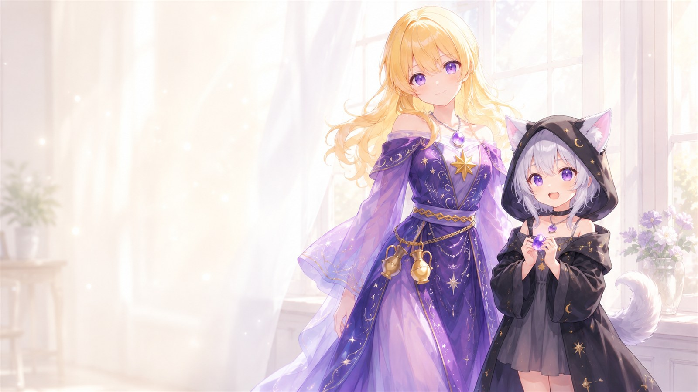
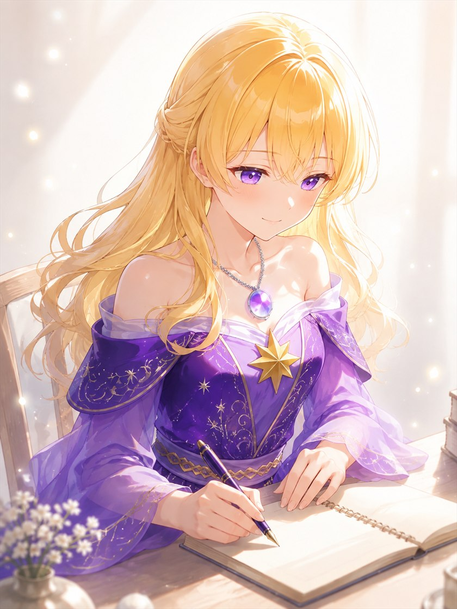
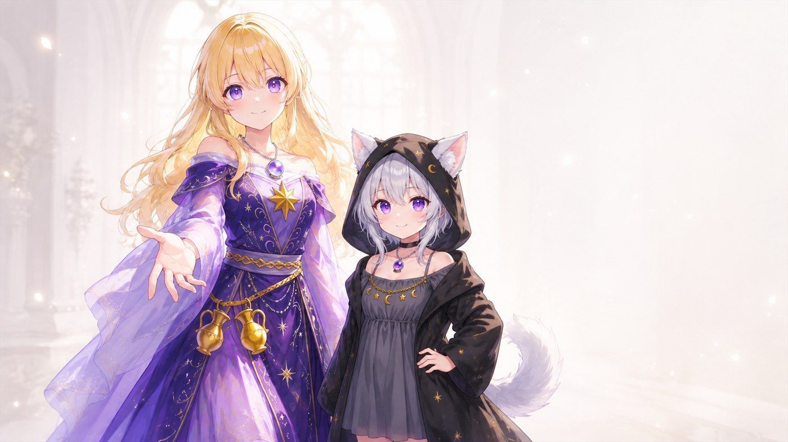
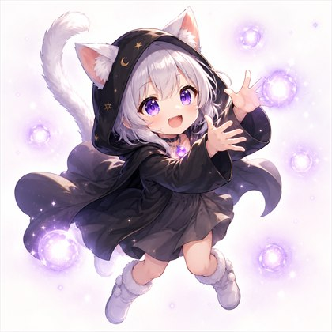
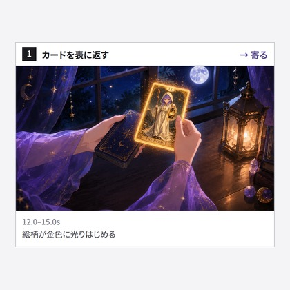

水晶ゆめ🔮
当てない占い師×夢を灯す創作家
AIの絵と物語と動画 × 創作の裏側 × 当てない占い
ABOUT

毎朝、オラクルカードを1枚引いています。
未来を当てることは、していません。
私自身、副業の遠回りを重ねて、
発信で信頼を失ったこともありました。
そんな夜を支えてくれたのが、
布団の中で引いた一枚のカードと、
推しの配信でした。
占いは、当てるものではなく、
今日を少し軽くするための習慣だった。
そう気づいてから、書くものが変わりました。
当てる占いはしません。
代わりに、あなたが自分を責めずに休める場所を作っています🌙
WORK WITH ME

AIアートが描けるライターは増えましたが、
私の持ち味は「掛け算」だと思っています。
にぎやかに煽るのではなく、静かに信頼を積む発信が
お役に立てそうでしたら、ぜひご相談ください🌙
FAQ
個人鑑定は行っていません。記事を通して、心を整えるヒントをお届けしています。
当てることを目的にしていません。今日を少し楽にするための習慣として使っていただけたら嬉しいです。
生成AIを使っています。使ったツールは記事の中で必ずお伝えしています。
はい。やりたいことが固まっていない段階でも、一緒に形にするところからお手伝いできます。
PLAYGROUND
がんばらないで遊べる、小さなゲームを置いています。
夜の靄を、ルナと一緒に浄める3分のあそびです🌙

よるを浄める ルナと歩く、しずかな夜 あそんでみるTOOLS
創作のとちゅうで「これがあれば楽なのに」と思った道具を、作って置いています。
インストールは要りません。開けば、そのまま使えます🌿

絵コンテメーカー AI動画のカット割りを、ブラウザで組む つかってみる